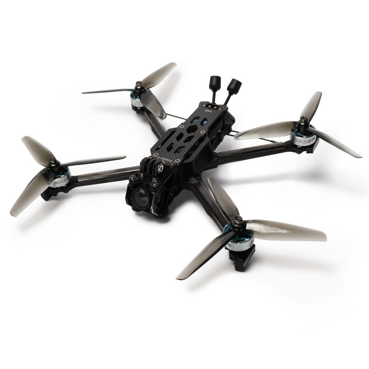
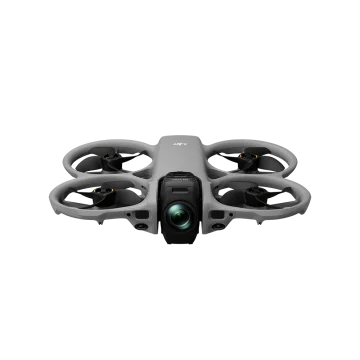
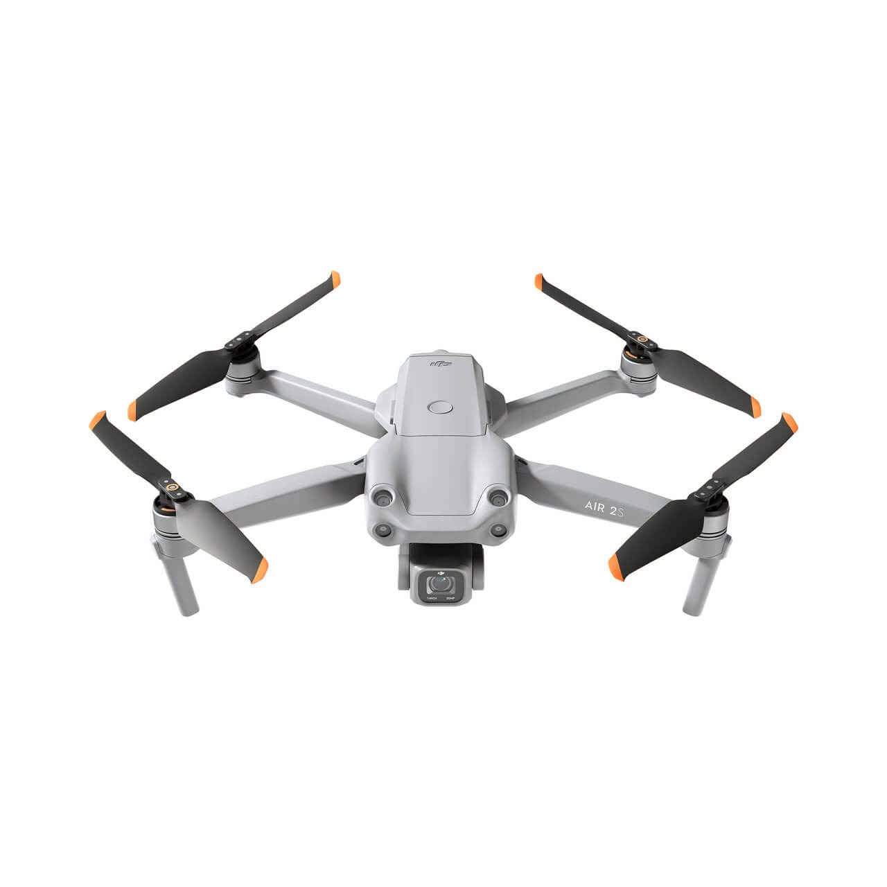
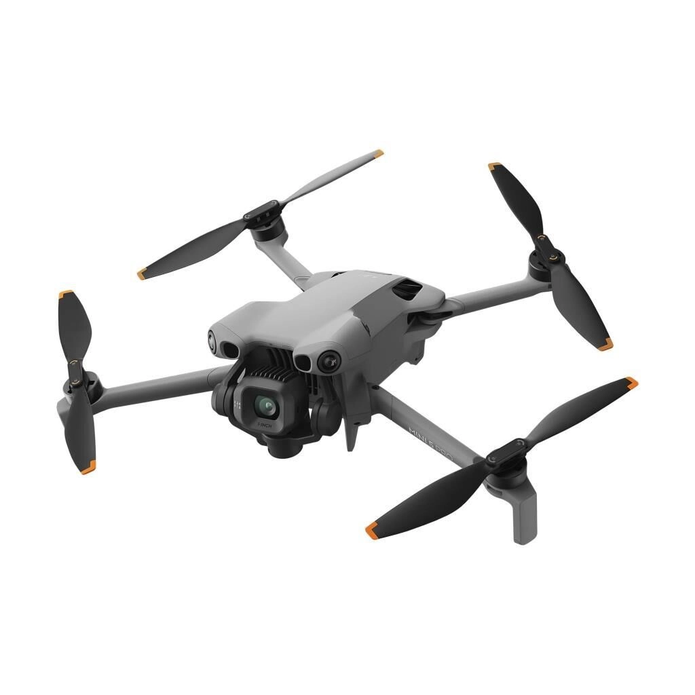

Gökyüzünden
bakınca
hikâye değişir.
Markanız, projeniz veya özel anlarınız için yalnızca havadan görüntü almıyoruz. Doğru drone'u, doğru rotayı ve doğru kadrajı seçerek projenize özel sinematik çekimler üretiyoruz.
İstanbul genelinde profesyonel çekim
Doğru görüntüyü
yakalamak başka bir iş.
Her çekime aynı ekipmanla gitmiyoruz. Mekânı, hareketi ve projenin amacını değerlendiriyor; ihtiyaca göre doğru drone'u ve doğru uçuş yaklaşımını belirliyoruz.
Her talebe gereken drone.
Her projeye özel çekim planı.
Hizmetlerimiz
Projenizin ihtiyacına göre doğru uçuş planını, ekipmanı ve çekim dilini belirliyoruz.
Sinematik Tanıtım Çekimleri
Marka, işletme ve projeler için akıcı kamera hareketleriyle sinematik hava görüntüleri üretiyoruz. Çekim rotasını hikâyenin temposuna göre planlıyoruz.
Gayrimenkul & Mimari
Konut, villa, rezidans, arsa ve ticari projeleri çevresiyle birlikte güçlü bir perspektiften gösteren profesyonel hava çekimleri hazırlıyoruz.
Otel & Turizm
Otel, resort ve turizm tesislerinin konumunu, mimarisini ve çevresini deneyim odaklı sinematik görüntülerle anlatıyoruz.
Etkinlik & Organizasyon
Festival, konser, düğün ve özel organizasyonlarda etkinliğin ölçeğini ve atmosferini havadan güçlü kadrajlarla kayıt altına alıyoruz.
Otomotiv Takip Çekimleri
Hareketli araçlar için dinamik takip rotaları ve FPV yaklaşımıyla tempolu, aksiyon odaklı görüntüler oluşturuyoruz.
FPV Aksiyon Çekimleri
Dar alanlar, hızlı geçişler ve yüksek hareket gerektiren projelerde FPV drone sistemleriyle izleyiciyi sahnenin içine taşıyan görüntüler üretiyoruz.
İnşaat & Proje Takibi
Şantiye ve devam eden projelerin belirli dönemlerde havadan kayıt altına alınması için düzenli çekim planları oluşturuyoruz.
Sosyal Medya İçerikleri
Reels, kısa video ve dijital kampanyalar için hızlı tüketilen ancak görsel gücü yüksek dikey ve yatay drone görüntüleri hazırlıyoruz.
Her çekime
doğru drone.
Hız, manevra, görüntü kalitesi ve çekim alanı her projede farklıdır. Bu yüzden ekipman seçimimizi çekimin ihtiyacına göre yapıyoruz.

FPV Aksiyon Dronu
Hızlı geçişler, dinamik araç takipleri ve yüksek hareket gerektiren sahneler için kullandığımız çevik çekim sistemimiz.
Hareketin içine girer.

Avata 360
Mekân içerisinde veya objelere yakın kontrollü geçişler gerektiren çekimlerde akıcı hareket dili oluşturmak için tercih ettiğimiz sistem.
Mekânı tek hareketle anlatır.

Mavic 2S
Geniş perspektif, kontrollü kamera hareketleri ve güçlü genel planlar gerektiren prodüksiyonlarda kullandığımız sinematik çekim platformu.
Büyük resmi gösterir.

Mini 5 Pro
Daha kompakt ekipman ve esnek çekim yaklaşımı gerektiren projelerde hızlı planlama ve kontrollü kadrajlar için kullandığımız çözüm.
Küçük gövde. Büyük perspektif.
Çekimden önce
uçuşu düşünüyoruz.
İyi bir hava görüntüsü yalnızca drone'u kaldırmakla oluşmaz. Lokasyon, ışık, hareket ve görüntünün kullanılacağı alan birlikte değerlendirilmelidir.
Projeyi Dinliyoruz
Çekimin nerede kullanılacağını, hedeflenen görüntü dilini ve projenin önceliklerini öğreniyoruz.
Lokasyonu Değerlendiriyoruz
Alan yapısını, hareket rotalarını ve çekim için gerekli görsel yaklaşımı planlıyoruz.
Doğru Drone'u Seçiyoruz
FPV aksiyon sisteminden kompakt çekim platformlarına kadar proje için uygun ekipmanı belirliyoruz.
Kadrajı Planlıyoruz
Uçuş rotasını yalnızca teknik olarak değil, görüntünün anlatmak istediği hikâyeye göre oluşturuyoruz.
Görmek değil.
Doğru yerden göstermek.
Yükseklik tek başına güçlü bir görüntü oluşturmaz. İzleyicinin nereye bakacağını, hareketin nerede başlayacağını ve kadrajın nerede biteceğini çekimden önce düşünüyoruz.
Her uçuşun bir amacı.
Her hareketin bir kadrajı var.
Havadan görüntü değil,
bakış açısı üretiyoruz.
HAVAKARE Drone Çekimleri, İstanbul merkezli profesyonel hava görüntü prodüksiyon hizmetidir. Her projeyi aynı uçuş planıyla ele almak yerine çekimin amacını, lokasyonu ve hareket ihtiyacını değerlendirerek projeye özel bir yaklaşım oluşturuyoruz.
İstanbul genelinde marka, işletme, gayrimenkul, otomotiv, etkinlik ve özel proje çekimlerini planlıyoruz.
Doğru Ekipman
Projeye göre drone seçimi.
Planlı Hareket
Çekimden önce rota yaklaşımı.
Güçlü Kadraj
Görüntünün kullanım amacına göre kompozisyon.
Çekimden önce
merak edilenler.
Projenizi planlamadan önce en sık karşılaştığımız soruları bir araya getirdik.
Uçuş lokasyonu çekim öncesinde değerlendirilir. Gerekli kayıt ve izin süreçlerine tabi bölgelerde çekim planı, ilgili mevzuat ve uçuş koşulları dikkate alınarak oluşturulur.
Marka ve işletme tanıtımları, gayrimenkul, otel, fabrika, otomotiv, etkinlik, organizasyon ve özel projeler için profesyonel drone çekimleri gerçekleştiriyoruz.
İstanbul genelinde hizmet veriyoruz. Projenin kapsamına göre şehir dışındaki çekim taleplerini de değerlendiriyoruz.
Evet. Lokasyon, hareket alanı, çevresel koşullar, kadraj ve uçuş yaklaşımı çekim öncesinde değerlendirilerek projeye özel bir çekim planı oluşturulur.
Uçuş güvenliğini etkileyen şiddetli rüzgâr, yağmur veya uygun olmayan hava koşullarında çekim, karşılıklı olarak belirlenen uygun bir tarihe yeniden planlanabilir.
Teslim süresi projenin kapsamına ve kurgu ihtiyacına göre değişebilir. Tahmini teslim süresi çekim öncesinde proje detayları değerlendirilerek netleştirilir.
Projenin kapsamına ve talebe göre ham görüntülerin teslimi planlanabilir. Bu detay çekim öncesinde proje kapsamına dahil edilir.
Çekim yapılacak lokasyonu ve projenizin temel detaylarını bizimle paylaşmanız yeterlidir. İhtiyaçlar değerlendirildikten sonra projeye özel fiyat teklifi oluşturulur.
Aklınızdaki soru
burada yok mu?
Projenizi veya merak ettiğiniz konuyu kısaca anlatın. Çekim yaklaşımını ve ihtiyaçlarınızı birlikte netleştirelim.
Aklınızda bir çekim mi var?
Projeyi anlatın.
Gerisini birlikte planlayalım.
Çekim yapılacak lokasyonu ve nasıl bir görüntü istediğinizi kısaca anlatmanız yeterli. Projenize uygun çekim yaklaşımını ve drone seçimini birlikte değerlendirelim.